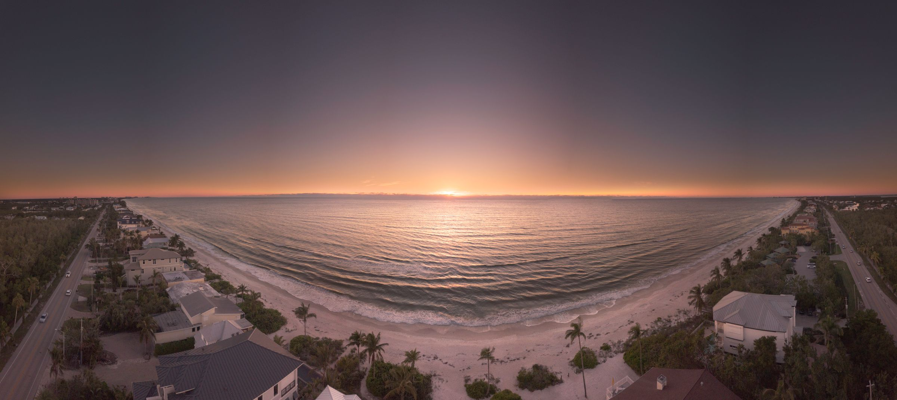

Débroussaillage du glacis
On rouvre les abords de la tour, envahis par les ronces. Serpes, sécateurs et café au coin du feu. De quoi retrouver le point de vue sur la baie.
Ouvert à tous
S'inscrire →
Participer
Le lieu part de zéro. Tout est à faire, et il y a de la place pour chacun.
Toutes les façons d'aider
Faire vivre le domaine, ce n'est pas que porter des pierres. Il y a une place pour chaque envie et chaque compétence.
Les jours de rendez-vous
Accueil du public, buvette, montage et démontage. Les mains sur le pont le temps d'une fête, et on repart.
Vos savoir-faire
Photo, com et réseaux, compta, menuiserie, jardinage. Ce que vous savez faire manque sûrement quelque part.
Grand air
Sentiers à rouvrir, verger à tailler, espaces verts à garder vivants. Dehors, à son rythme.

01 · Remettre le domaine sur pied
Le domaine sort de décennies d'abandon. Avant d'imaginer la suite, il faut dégager, débroussailler, sécuriser, replanter. Des week-ends et des sessions ouverts à tous pour rendre le lieu à nouveau vivant, les pieds dans l'herbe et la baie en face.
Comment ça marche
Du chantier d'un jour à la session d'une semaine. Repas partagés sur place, encadrement assuré. Ouvert à tous, sans condition de diplôme ni d'expérience, de 16 à 78 ans.
Les prochains chantiers
On rouvre les abords de la tour, envahis par les ronces. Serpes, sécateurs et café au coin du feu. De quoi retrouver le point de vue sur la baie.

Une semaine pour vider, nettoyer et sécuriser les casemates enfouies dans le domaine. Un patrimoine oublié qu'on prépare à rouvrir au public.

Taille des vieux fruitiers, plantation de jeunes arbres et de haies. On prépare le domaine pour le printemps, en famille et à tout âge.

Sur les dépendances de la ferme, on apprend les gestes de la maçonnerie à la chaux aux côtés d'un professionnel du bâti ancien. Aucune expérience requise.
La grande ambition
La tour de Cesson veille sur la baie depuis 1395. La restaurer avec les gestes et les outils d'autrefois, à ciel ouvert, devant les visiteurs qui viennent voir les bâtisseurs à l'œuvre : c'est le projet que porte l'association. Ici, le chantier n'est pas caché derrière des palissades. Il est le spectacle.
Le modèle existe et il fonctionne : à Guédelon, un château sort de terre à l'ancienne depuis vingt-cinq ans et attire près de 300 000 visiteurs par an, sans une subvention. La restauration devient à la fois le patrimoine sauvé, l'attraction et le moteur économique du territoire.
Un monument historique ne se restaure pas seul. L'association porte cette vision aux côtés de la Ville de Saint-Brieuc, de la DRAC, de l'Architecte des Bâtiments de France et du réseau REMPART, sous la conduite de professionnels du patrimoine. Ce n'est pas pour demain, c'est le cap.
Soutenir le projet →Vous portez un projet, un atelier, une activité en plein air ? Le domaine prête son cadre.
Pas de résidence, pas de bureaux : treize hectares face à la mer qui s'ouvrent aux initiatives. On vient, on anime, on repart.
Un apiculteur pose ses ruches sur le plateau, à l'abri du vent.
Un prof de yoga rassemble son groupe le dimanche matin, face à la baie.
Un collectif investit la tour et les bunkers le temps d'un workshop.
Un conteur emmène petits et grands sur les sentiers, à la tombée du jour.
Soutenir
10€ / an
Devenez membre des Amis du Domaine de la Tour de Cesson. Soutenez le projet, participez aux décisions en assemblée générale, et restez informé de tout ce qui se passe à Amer.
Adhérer via HelloAsso →Entreprises du territoire : soutenez la restauration du patrimoine briochin. Réduction d'impôt de 60% du montant du don.
Un don de 1 000€ ne coûte réellement que 400€ à votre entreprise après déduction fiscale. Et 1€ investi dans le patrimoine génère 21€ de retombées économiques locales.
Un don libre, même petit, fait avancer le projet.
Faire un don via HelloAsso →